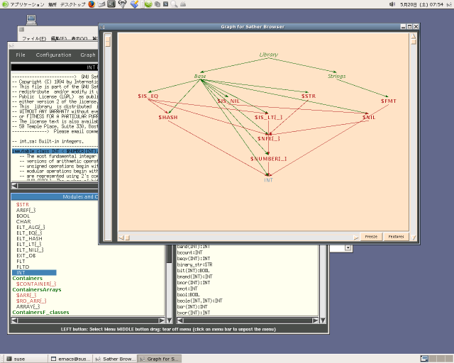

HOME
HOME 書き込む
書き込む
|
HOME |
|
書き込む |
01: -- a simple "Hello World" program 02: 03: class MAIN is 04: main is 05: #OUT + "Hello World!\n"; 06: end; 07: end;
#OUT + "1 + 2 = " + (1+2) + "\n";
$ sacomp hello.sa -o hello $ ./hello Hello World!また、複数のソースコードをコンパイルするときは以下のようにコンパイルするファイルを列挙します。
$ sacomp foo1.sa foo2.sa foo3.sa -o fooコンパイラーは sacomp といいます。他のコンパイラーと同様に '-o' オプションで実行ファイル名を指定します。 sacomp のオプションについては Compiler Man Page を見てください。このリンクではコンパイラーを 'cs' と書いてありますが、'sacomp' に読みかえてください。
-output_C や -only_C オプションをつけてコンパイルすると C 言語のソースコードが生成されるので そのソースを他のプラットフォームでコンパイルすることが可能です。win32+cygwin ではそのまま make して 実行ファイルが作成されます。
sabrowse はソースコードおよびクラス間の関係を表示します（図 1, 2)。
Sather は多重継承をサポートしているので、このヴューアーは複雑なプログラムを書くときに重宝します。
$ sabrowse hello.sa

図 2. クラス間の関係を表示する画面
| データ型 | 初期値 | 説明 |
|---|---|---|
| BOOL | false | 真偽値。true と false があります。 |
| INT | 0 | 符号付整数型。32 bit 以上。 |
| INTI | 0i | 無限精度整数型 |
| FLT | 0.0 | 単精度浮動小数点。IEEE-754-1985 |
| FLTD | 0.0d | 倍精度浮動小数点 |
| CHAR | '\0' | 文字。特殊文字は C 言語と同じ。 |
| STR | "" | 文字列 |
b0:BOOL := true; ia:INT := 10; ib:INT := -321; ic:INT := 13_456_367_443; -- '_' で区切ることができます。 id:INT := 0b11001; -- binary = 25 ie:INT := 0o37323; -- Oct if:INT := 0x_ea_75_67; -- Hex ig:INTI := -4325i; -- 無限精度整数 ih:INTI := 0o33784; fa:FLT := 0.0; fb:FLTD := 3.1345e-2d; ca:CHAR := 'a'; cb:CHAR := '\n'; -- 改行 sa:STR := "Hi";同じ型であれば複数まとめて宣言することができます。
a,b,c :INT; x,y,z :FLT;
-- C style
a:ARRAY{INT}:=#(10); -- int a[10];
a[0] := 100; -- a[0] = 100;
i:INT := a[1]; -- int i = a[1];
s:ARRAY{STR}:= |"foo", "bar", "baz"|; -- char* s[] = {"foo", "bar", "baz"};
s.has("foo") → true
01: -- a simple factorial program 02: 03: class MAIN is 04: main(av: ARRAY{STR}) is 05: n:INT; 06: if av.size = 2 then 07: n := av[1].cursor.get_int; 08: #OUT + fact(n) + "\n"; 09: else 10: #ERR + "Usage: fact N\n"; 11: end; 12: end; 13: 14: fact(n:INT):INT is 15: if n=0 then return 1; 16: else return n * fact(n-1); 17: end; 18: end; 19: end;メソッドの定義は
method_name(parm1:TYPE1, parm2:TYPE2):RETURN_TYPE is ....... ....... end;のように、メソッド名、引数のリスト、返り値のデータ型 で定義します。
if if_test then
if_body
elsif elsif_test then
elsif_body
else
else_body
end;
01: -- example of if: iftest 02: 03: class MAIN is 04: main(argv: ARRAY{STR}) is 05: a1, s1: STR; 06: flag : ARRAY{CHAR} := |'a', 'b', 'c'|; 07: if argv.size = 2 then 08: a1 := argv[1]; 09: if a1[0] = '-' then 10: if flag.has(a1[1]) then print_out(a1); 11: else #OUT + "This option is not supported.\n"; 12: end; 13: else show_usage; 14: end; 15: else show_usage; 16: end; 17: end; 18: 19: print_out(s:STR) is 20: #OUT + "Option " + s + " is selected.\n"; 21: end; 22: 23: show_usage is 24: #OUT + "Usage iftest -[abc]\n"; 25: end; 26: end;
$ sacomp iftest.sa -o iftest $ ./iftest -a Option -a is selected. $ ./iftest -d This option is not supported. $ ./iftest a Usage iftest -[abc].
case parameter
when values_1 then
procedure_1
when values_2 then
procedure_2
else
else_procedure
end;
01: -- example of case: casetest 02: 03: class MAIN is 04: main(argv: ARRAY{STR}) is 05: a1, s1: STR; 06: -- flag : ARRAY{CHAR} := |'a', 'b', 'c'|; 07: if argv.size = 2 then 08: a1 := argv[1]; 09: if a1[0] = '-' then 10: -- if flag.has(a1[1]) then print_out(a1); 11: case a1[1] 12: when 'a', 'b', 'c' then print_out(a1); 13: else #OUT + "This option is not supported.\n"; 14: end; 15: else show_usage; 16: end; 17: else show_usage; 18: end; 19: end; 20: 21: print_out(s:STR) is 22: #OUT + "Option " + s + " is selected.\n"; 23: end; 24: 25: show_usage is 26: #OUT + "Usage iftest -[abc]\n"; 27: end; 28: end;
|
HOME |
|
書き込む |